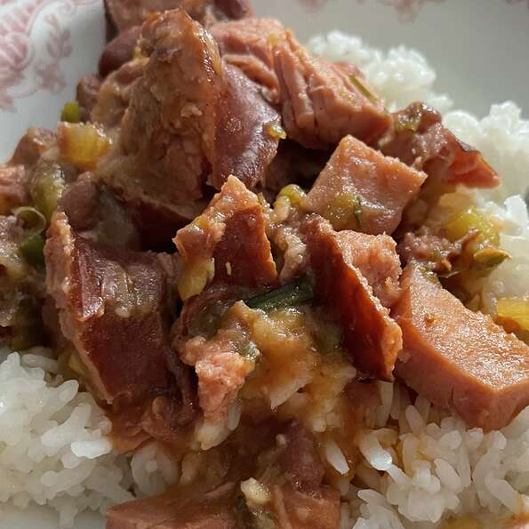

Red Beans and Rice
Creamy red beans and rice that everyone loves.

Description
This recipe will guide you on how to make the delicious creamy Red Beans and Rice
Ingredients
- 1 pound dried red beans
- 3 andouille sausage links
- 2 tablespoons butter
- 2 cups minced onions
- 1 cup minced green bell pepper
- 1/2 cup minced celery
- 4 bay leaves
- 1 slice ham steak, cubed, or more to taste
- 2 tablespoons Creole seasoning, divided
- 7 cups chicken broth
- 2 tablespoons chopped garlic
- 1 cup tomato sauce
- 2 teaspoons vinegar
- 1/2 cup chopped green onions, divided
- 2 tablespoons chopped fresh parsley
- 3 cups cooked rice, or to taste
Steps
- Place red beans into a large container and cover with several inches of cool water; let stand 8 hours to overnight. Drain.
- Heat a skillet over medium heat; cook sausage until cooked through, 10 to 15 minutes. Transfer sausage to a work surface and slice.
- Heat butter in a skillet over medium heat; cook and stir onions, bell pepper, celery, and bay leaves until softened, about 5 minutes. Add sausage, ham, and 1/2 of the Creole seasoning; saute over medium-high heat until lightly browned, about 10 minutes. Stir drained beans into sausage mixture.
- Mix chicken broth, garlic, and remaining Creole seasoning into bean mixture; cover skillet and simmer on low for 3 hours.
- Stir tomato sauce, vinegar, and 1/2 of the green onions into bean mixture, slightly smashing beans with a potato masher. Simmer, uncovered, until thickened and beans are tender, about 30 minutes more. Mix remaining green onions and parsley into beans and serve over cooked rice.
Return to Menu